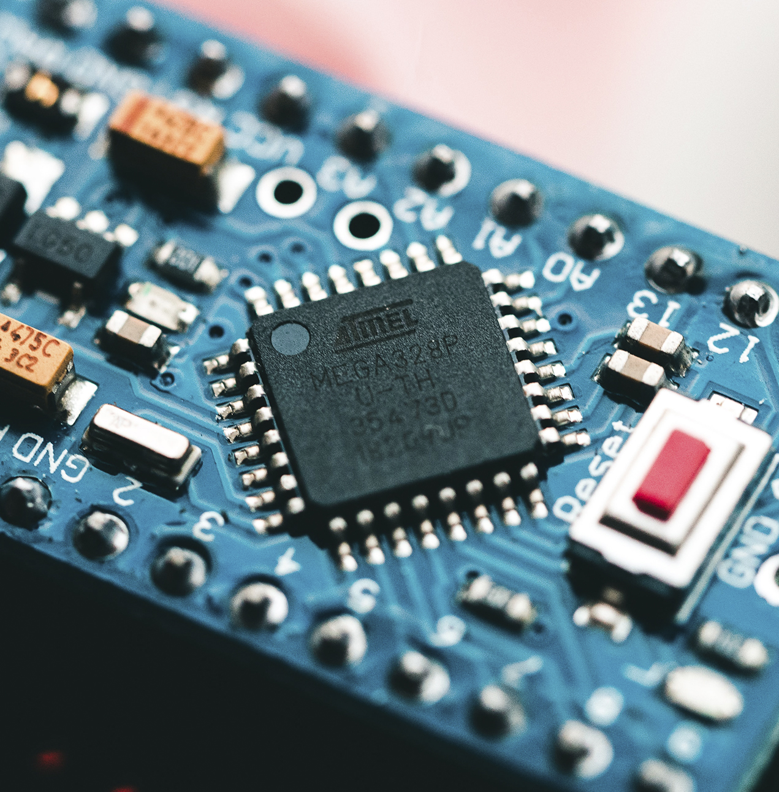
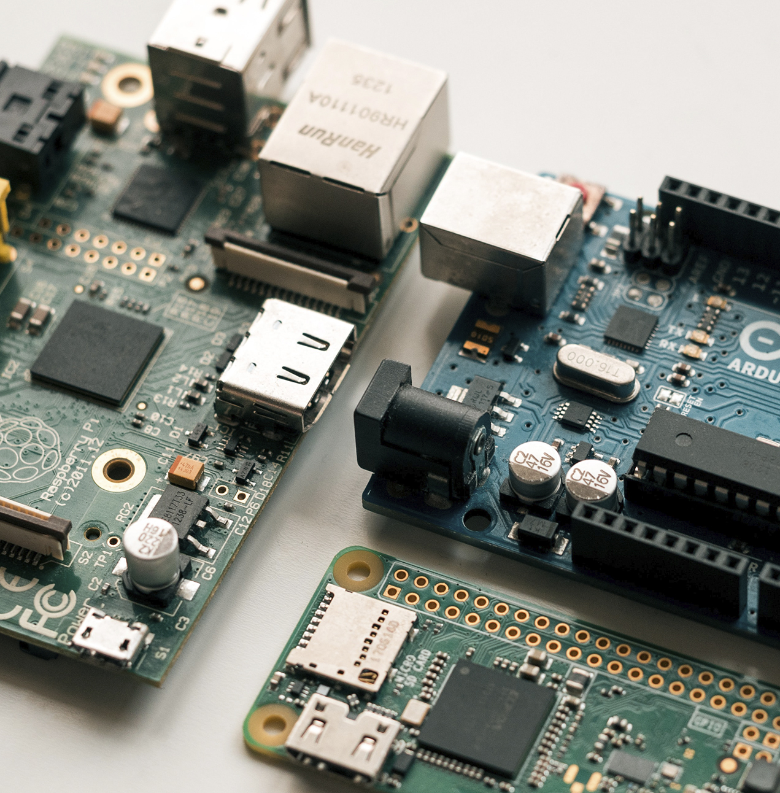
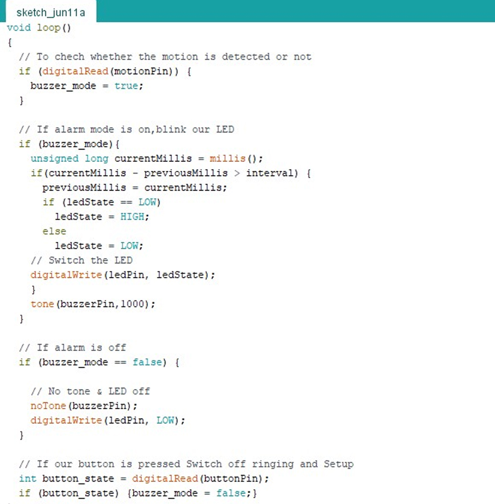

hola!
Hoy vimos sobre arduino, sus partes, como se
enlaza a tinkercad y como programarlo

Arduino
¿qué es?
Es una plataforma de creación de electrónica de código abierto, la cual está basada en hardware y software libre, flexible y fácil de utilizar para los creadores y desarrolladores. Esta plataforma permite crear diferentes tipos de microordenadores de una sola placa a los que la comunidad de creadores puede darles diferentes tipos de uso. El Arduino es una placa basada en un microcontrolador ATMEL. Los microcontroladores son circuitos integrados en los que se pueden grabar instrucciones, las cuales las escribes con el lenguaje de programación que puedes utilizar en el entorno Arduino IDE. Estas instrucciones permiten crear programas que interactúan con los circuitos de la placa.
Además, las placas Arduino también cuentan con otro tipo de componentes llamados Escudos (Shields) o mochilas. Se trata de una especie de placas que se conectan a la placa principal para añadirle una infinidad de funciones, como GPS, relojes en tiempo real, conectividad por radio, pantallas táctiles LCD, placas de desarrollo, y un larguísimo etcétera de elementos. El Arduino es una placa basada en un microcontrolador ATMEL. Los microcontroladores son circuitos integrados en los que se pueden grabar instrucciones, las cuales las escribes con el lenguaje de programación que puedes utilizar en el entorno Arduino IDE. Estas instrucciones permiten crear programas que interactúan con los circuitos de la placa.
Tipos de sensores

Tinkercad
¿de qué se trata?
Programar Arduino consiste en traducir a líneas de código las tareas automatizadas que queremos hacer leyendo de los sensores y en función de las condiciones del entorno programar la interacción con el mundo exterior mediante unos actuadores. Arduino proporciona un entorno de programación sencillo y potente para programar, pero además incluye las herramientas necesarias para compilar el programa y “quemar” el programa ya compilado en la memoria flash del microcontrolador. Además el IDE nos ofrece un sistema de gestión de librerías y placas muy práctico. Como IDE es un software sencillo que carece de funciones avanzadas típicas de otros IDEs, pero suficiente para programar.